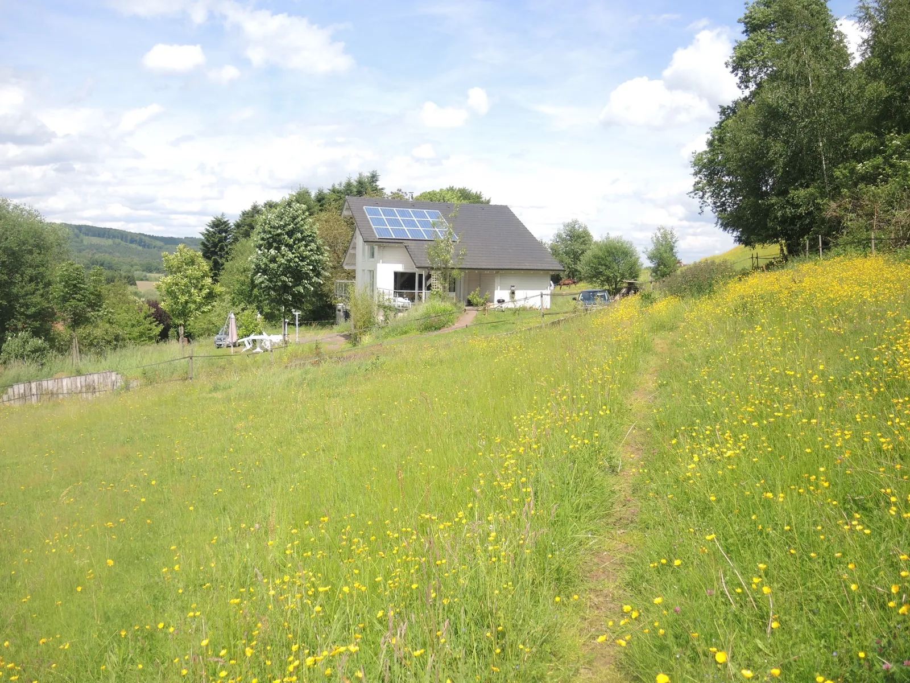
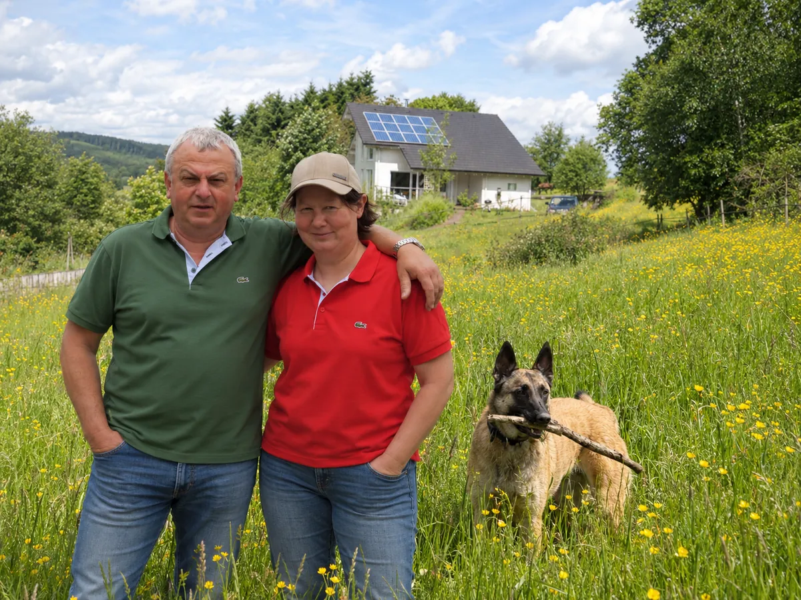

Duos gîtes tranquilas entre o prado e a floresta
Na colina que domina Varsberg, no lugar chamado Vogelsgesang, «o canto dos pássaros». Dois hectares de prados à beira da floresta, trilhos que partem do jardim e um terraço para cada casa.


Dois gîtes gémeos, a mesma vista
As mesmas comodidades de ambos os lados. Reserve uma, ou as duas para toda a família.
- 60 m²
- 2 quartos
- 5 pessoas
- Terraço privativo
- Estacionamento
- Wi-Fi
- Animais bem-vindos

Um lugar que faz jus ao nome
Os nossos dois gîtes são dois apartamentos no piso do jardim da nossa casa, no coração de uma vasta propriedade de dois hectares verdejantes à beira da floresta, num lugar de exceção chamado «Vogelsgesang», o canto dos pássaros.
Descobrir a propriedade →O que dizem os nossos hóspedes
Mais de cem opiniões nas plataformas de reserva, com uma média que se mantém alta.
★★★★★Hôte très accueillant et séjour très agréable. Gîte très calme, bien équipé, très bonne literie, cadre forestier et nombreux sentiers.
Nicolas · Gîtes de France · 2025-08
★★★★★Impeccable. Excellent rapport qualité-prix, logement conforme à la description — et merci pour la bouteille de vin de Moselle.
Kevin · Gîtes de France · 2025-02
★★★★☆Gîtes au calme, propriétaires sympas, confortable.
Jean · Gîtes de France · 2026-08

Agnès e Marc dão-lhe as boas-vindas
Gîtes de France (3 espigas) desde 2016, Clévacances e Tourisme & Handicap. Falamos francês, inglês e alemão.